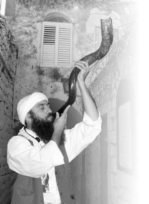

A Slichos Tour in Old Tzfas
Menachem Mendel Arad joined Ascent ’ s Slichos Tour together with a group of commanders and officers from the IDF. * They started out at Ascent and ended with a moving recitation of Slichos in the Sephardic Ari shul. They heard about the significance of forgiveness, about renewal, and about the ability to return to “ my inner self ,” along with the power that each one of us has to transform our world to a world of Geula. * Ah! The tour is about to begin, won ’ t you join us …

The niggunim play on the heartstrings, both the revealed and the hidden, and successfully draw forth rousing melodies from the depths of the hearts of the audience. At the end of the musical performance, Doron Haggi, of Ascent’s staff, spoke about the purpose of the tour and about Ascent.
“Ascent was founded under the direction of the Lubavitcher Rebbe by three Chabad Chassidim who came to Tzfas. Originally, Ascent was meant for American tourists, but over the years, it has opened its doors to all Jews, especially groups from the army, for Shabbatons, workshops, and lectures.”
Doron told them about his army experiences, his becoming a baal t’shuva and his shlichus in Italy, and concluded with, “I feel both a desire and an important sense of mission to take you on this uplifting journey, thus thanking you for the holy work that you do for us and for all the Jewish people.”
Haggi, who used to be a comedian, spoke about the meaning of t’shuva, but included a nice measure of humor which got us all comfortable with one another as well as with the concept of t’shuva.
“T’shuva is renewal. We all want newness; even buying a pair of new shoes is an expression of the desire of renewal. We want to renew our relationship with our wife, to refresh and improve our relationship with our children, to remind ourselves that we are good people. And also to examine ourselves, just as in the army they conduct an investigation in order to be more effective. We want to see what is the best way to renew ourselves and to enter the new year, not downcast by our failures, but happier and wiser, experienced by our failures too, and of course, also by our successes.
“The desire for renewal is that which helps us search for the root of the problem and want to fix ourselves, to ‘shower,’ to detox, from the anger, the lust, and to return to our ‘essential me,’ as Jews and truly good people.”
In walked Eyal Karoutchi, dressed in white, almost as if he just landed from the Tzfas of an earlier era. In his right hand was a whorled Yemenite shofar. After a loud blast on the shofar, he invited us to join him on a winding tour through the old city.
Karoutchi, from the Chabad community in Tzfas, spent twelve years in the Far East where he studied yoga, meditation, holistic healing, and self-awareness. When he went to the yeshiva in Ramat Aviv, he decided to channel all his enormous knowledge to improving self-awareness according to Chassidic teachings. Karoutchi, who is also a senior lecturer at Ascent, is a fascinating person, and his fantastic humor sweeps along the last of the cynics and the skeptics.
“Welcome to Tzfas,” he announced dramatically. “In Eretz Yisroel, there are four cities that are referred to as holy: Yerushalayim, Chevron, Teveria and Tzfas. We know there are four basic elements in nature: fire, earth, air and water. The kabbalists revealed to us that each of the holy cities corresponds to one of the elements. Teveria, which lies on the shores of the Kinneret, is water. Chevron, which has the Meoras HaMachpella where the Avos and Imahos are buried, is earth. Yerushalayim, which has the Beis HaMikdash where korbanos were brought on the altar, is fire. And Tzfas, the city where Kabbala was written, is associated with air-ruach-ruchnius.
“Each thing has its physical side as well as its spiritual side. In a person, the body is physical and the neshama is spiritual. The Torah also has two aspects, material and spiritual. The stories and mitzvos in the Torah are the physical side; the inner meaning of the stories and the intentions and feelings that lie behind the mitzvos, are the spiritual aspect.
“Kabbala is the spiritual aspect of Torah. Kabbala speaks about that which is beyond, about the soul within everything. Not just ‘what happened,’ but ‘why did it happen.’ Not just ‘what needs to be done,’ but ‘why must it be done.’
“So the secrets of Torah are called Kabbala. On the one hand, this teaches us that we have to be recipients of the secret. Oftentimes, the information is super-rational and we simply need to receive it. On the other hand, if we add the letter Hei to the beginning of the word, we get ‘HaKabbala,’ since the secrets of Torah speak about that which is parallel to our universe.”
Karoutchi went on to talk about the revelation of the wisdom of Kabbala, mainly in Tzfas, and even I and the photographer, residents of Tzfas, discover that this tour, which had not yet begun, was revealing new dimensions to what we knew from childhood.
A TOUR THAT BIRTHED A TANYA CLASS
On Ascent’s open porch, we looked west at the horizon, toward Miron. On the mountain with two peaks, we could see the antennas of the air force on the right peak, and under the left peak we could see the roof of the grave of the Tanna, Rabbi Shimon bar Yochai.
Those present were given a brief overview of the life and legacy of R’ Shimon bar Yochai. During the evening and night, more and more groups of tourists left Ascent for the old city; sometimes, hundreds of tourists will traverse this route in one night. In the meantime, I take the time to form my impression of the other guides and listen to how they convey their messages and watch how the tourists respond. Not all the guides are baalei t’shuva. Some are born and bred Chassidim like R’ Leibush Kaplan and R’ Shneur Shachar, teachers in Yeshivas Chanoch L’Naar. They said that in order to adapt the Slichos tour to suit every Israeli, they do not mention the concepts of t’shuva and mitzvos. This enables every person to connect to the messages of forgiveness and renewal in their own way.
R’ Shachar spoke about a religious-nationalist couple who came on a Slichos tour with only a few people. The dynamics between the tourists in general, and especially with the couple, was very special. During the tour, they spoke not only about Kabbala and the holy Arizal but also about Chassidus and Tanya. At the end of the tour, the husband, a teacher in a yeshiva high school, wanted to buy the book on Tanya authored by R’ Nadav Cohen, a senior lecturer at Ascent. Later on, he contacted R’ Shachar and excitedly told him that he hadn’t been at peace until he obtained special permission from the yeshiva’s administration where he worked, to give a Tanya shiur to his students as part of the yeshiva curriculum.
When the tour takes place during the day (tours in the old city take place all year), the tourists also go to the candle factory where they enjoy the unique gifts. Since the Baal Shem Tov says that we can learn a lesson in avodas Hashem from everything, the guides point out the difference between Shabbos candles and Havdala candles.
“We bring in Shabbos with candles that are separate. When we part from Shabbos, we use braided candles. The Shabbos works that way on the family, bringing everyone together.”
MIRACLE IN THE SHUL
We headed for one of the most ancient shuls in the old city, the Ashkenazi Ari shul. According to tradition, and as the sign says in the entrance, this is the chakal tapuchin kadishin (lit. the garden of holy apples; a kabbalistic reference). From here, the Arizal and his students went forth to greet the Shabbos Queen.
It is exciting even for someone who has just heard of the Ari for the first time, as he is presented with many wondrous stories about his life. When they were told the story about the Ari suggesting to his talmidim that they welcome Shabbos in Yerushalayim, and his talmidim said they would ask their wives, upon which the Ari said they had forfeited an auspicious time to bring the Geula, the group of command staff protested, “What’s wrong with speaking to your wife?” Eyal explained the Rebbe’s sicha on the story by saying, “When the general gives an order, even if it sounds like a suggestion, there is no time to consult, not even with your wife. You simply charge towards the goal.”
The Arizal lived only two years in Tzfas and passed away at the very young age of 38. However, during those two years, he transformed the world of Kabbala. One of his big innovations is that in our times, the secrets of Torah no longer need to remain a secret. Now it is permissible and a mitzva to reveal this wisdom. Later on, Kabbala expanded through the teachings of Chassidus and it has reached a point where it is accessible to all.
The shul was renovated after the major earthquake on 24 Teves 5597/1759. During the Ari’s times, this was the place where the famous Kabbalas Shabbos of the Ari and his talmidim took place. The Kabbalas Shabbos prayers, that are recited in every community today, were formulated in Tzfas 500 years ago. The great kabbalists said we need to prepare for Shabbos properly, not only physically but spiritually too. So they would go out to the fields on Erev Shabbos and sing and dance as they welcomed the Shabbos Queen. Today too, we welcome Shabbos with simcha and song.
“During the War of Independence many miracles took place. One of them happened in this shul. A piece of shrapnel entered the shul in the middle of the davening, just as the congregation was bowing down for Modim. The shrapnel passed over them all and entered the bima where there remains a hole today.”
PRAYER ACHIEVES HALF
Another stop on our interesting route was the shul of R’ Avrohom Dov Auerbach of Ovruch zt”l, who made aliya in 5591/1751. Upon arriving in Tzfas, the Chassidic community appointed him as their rav. Although he was a Chassidic rav, he was also accepted by the Sephardim and the perushim.
“In this shul, one of the greatest miracles to take place in Tzfas occurred. In 5597/1759, there was a devastating earthquake which nearly destroyed the entire city. Many Jews were killed. When the earthquake began, R’ Avrohom Dov was davening Mincha in shul. When the earth began to shake, he gathered all those who were in the shul and told them to lie on the ground and hold on. The quake intensified and the congregants were sure that the building would collapse on them. The entire building around them collapsed, the walls fell, and only the small area that they were in remained intact. Even the ceiling that covered that area remained intact, suspended in the air, without a wall or any support to hold it up.
“To commemorate this miracle, a sign was put up that remains there until today stating, ‘How awesome is the place of the beis midrash of R’ Avrohom Dov, Admur of Ovruch zt”l, who foresaw the great earthquake in Tzfas in 5597/1759 and in his great merit, half of the beis midrash was saved from destruction and the Admur and his followers survived.’”
As we passed the shul belonging to the Kossov congregation, the guide was happy to inform the tourists about the natural continuity of Kabbala through Chassidus, and the uniqueness of Chassidus in that Chassidim brought the abstract ideas of Kabbala down into practical language. “Not just to intellectually explore supernal worlds, but to understand how it is connected to us, and to channel this knowledge into making a richer life, a life full of joy, a life of Torah and mitzvos done enthusiastically.”
The tour through the winding alleyways of the old city, at night, is magical—the uniquely designed houses, the archways and narrow passageways that are dimly illuminated, some only by the light of the moon.
THE ANCIENT SHULS OF TZFAS
On our way to the Abuhav shul, we could see the rocky view of Miron on the horizon. A discussion ensued about R’ Shimon bar Yochai and his legacy. It is always amazing to see how R’ Shimon merited that his name is familiar to all, and all kinds of Jews visit his grave.
I overheard discussions among the tourists who spoke about the positive outlook the tour gave them: to accept others, to learn from everyone, to be aware of the enormous treasure of Jewish history, and other comments about unity that warm the heart and soul.
In the shul named for R’ Yitzchok Abuhav, one of the g’dolim who lived in Spain 600 years ago, we saw three holy arks. The one on the left serves as a g’niza for worn out holy books; the middle one contains the sifrei Torah that are used regularly, on Shabbos, Yom Tov, Rosh Chodesh, Monday, and Thursday. The one on the right is the most interesting. It contains two of the oldest sifrei Torah in the world. The one that is 450 years old was written by the student of the Arizal, R’ Suleiman Ohana. The older Torah was written 600 years ago in Spain by R’ Yitzchok Abuhav. It was written in a unique manner, with extra holiness and purity. Each time he wrote G-d’s name, he would immerse in a mikva 26 times, the numerical equivalent of G-d’s name (Hashem’s name appears in the Torah 1820 times)!
After completing the Torah, he asked that it be read only three times a year, according to the acronym כשר – Kippur, Shavuos, Rosh HaShana. Till today, it is read only on these three holidays. Numerous people come from all over the country and the world to see this special Torah.
The shul was built several hundred years ago, and like the rest of the shuls was destroyed during the earthquake. However, the southern wall which houses the Aron Kodesh with the ancient Torahs survived the quake. The shul was rebuilt with the generous donation of the Italian philanthropist, Rabbi Yitzchak Goyatos (Guetta) in the 1840’s. Its reconstruction was done with the help of the greatest architects in Israel, and with consideration for the original design and in line with the theme of the song, “Who Knows One” (from the Hagada): One – a central bima; two – two flights of stairs going up to the bima; three – three holy arks; four – four supporting pillars, and so on.
The shul is active throughout the year and during Slichos it is full, with groups arriving from all over the country to pray.
The tour winds its way through the picturesque narrow streets of the old city. Every name of a shul is a fascinating journey into history, like the shul of R’ Yosef Caro, author of the Shulchan Aruch, and the shul of his student the holy Alshich, who was one of the dayanim in Tzfas.
“They say that R’ Moshe Alshich asked the holy Ari repeatedly to let him learn Kabbala with him, but the Ari kept pushing him off,” said Karoutchi. The crowd, despite the late hour, listened closely. “Then one day, after much importuning, the Ari said, “Now you will see that from heaven they do not want me to teach you Kabbala. Go out to the fields of Tzfas today, to the place where I welcome the Shabbos. If you see me welcome her, that is a sign that in heaven they want you to learn it; if you don’t see me, that is a sign that they don’t want it.’
“So the Alshich HaKadosh went out to the field. He sat under a tree and waited for the Ari. Then, before the Ari arrived, a strong sleep overcame him and he slept deeply. When the Ari finished Kabbalas Shabbos, he asked one of his talmidim to rouse R’ Moshe so he would not sleep alone in the field. The Alshich then understood that he wasn’t meant to learn Kabbala with the Ari.”
IN TZFAS, EVERYTHING IS DIFFERENT
“Tzfas has seen many miracles over the years; the biggest ones took place during the War of Independence in 1948. There were only 1500 Jews in Tzfas at the time, and 12,000 Arabs.” As Karoutchi said this, he was standing in the Kikar Hamaginim, which is the business, cultural and tourist center today. The small plaza is full of tiny restaurants and diverse galleries, but as a tour guide imbued with gratitude to Hashem, he managed to transport the soldiers in the group to the events of not so distant history.
One Friday, the British left the city so that the Jews and Arabs could fight it out on their own. The meager Palmach forces arrived and miraculously managed to conquer Tzfas.
One of the famous miracles happened when the residents of the city operated a Davidka (“Little David”), a homemade, primitive cannon which was extremely loud, but very inaccurate. In incredible hashgacha pratis, as they used the Davidka, it began to pour. At the sight of rain that came after the shelling, the Arabs were so frightened by what they thought was an atomic attack (it was believed that it would rain after an atom blast) that overnight, the entire Arab population fled from Tzfas.
When a reporter came after the war and asked the commanders how they had managed to capture the city, one of the irreligious ones said, “Do you want a rational answer or a religious answer?” The reporter said he wanted a rational answer. So the commander said, “The Creator descended on Tzfas and won the war for us. Any other answer is simply irrational.”
For those who think that miracles are part of history, the guide said with a smile, “In our generation too, we witnessed great miracles during the second Lebanon war, when 471 Katyushas landed in Tzfas over 33 days and there were hardly any casualties.”
WAITING WITH TEA AND COOKIES FOR MOSHIACH
There we were, standing in front of Moshiach’s Alley. “Before telling the story of the alley, let us remember what we spoke about during the tour. We spoke about the wisdom of Kabbala that descended to the world in stages. The Zohar was written by R’ Shimon bar Yochai and then there were the teachings of the Arizal. But the study of Sod was still not commonplace.
“The Baal Shem Tov, who lived 300 years ago, began the Chassidic movement and he began disseminating Sod to the masses. He said that on Rosh HaShana 5507/1742, he had a spiritual experience, in the course of which he rose to the supernal realms and saw Moshiach. He asked Moshiach: When are you coming? Moshiach answered: When you disseminate the secret teachings to the masses, then I will come.
“Sod is the neshama of Torah, and by learning Sod we reveal our neshama. This is Geula. When the main thing leading us will be our neshama, the G-dly spark, and not the ego, then will we start feeling the Geula. Then we will live in a world without hatred, jealousy and competition, traits that come as a result of our not feeling our neshama.
“This alleyway was named Moshiach’s alley because of a woman who lived here a generation ago. Her name was Yocheved Rosenthal and she lived in constant anticipation of Moshiach’s coming. She knew that we need to await him everyday, and even if he tarries, we still await him. She would go to the alley every day and put out tea and cookies, hoping to be the first to greet him. We too can take something from her simple faith and wait each day for his coming, and never give up hope.”
THE STEPS THAT GO UP AND DOWN IN TZFAS
We headed back to Ascent. Karoutchi got our attention before we went back in. “I would like to mention one of the great innovations of the teachings of Sod: hashgacha pratis. Sod teaches us that nothing happens by accident; everything is directed from above. Everything we see and hear is not coincidental. We were directed to see it so we can learn a lesson. So what do we learn from walking through the alleyways of the old city of Tzfas?
“You surely noticed that throughout the tour, we walked on a slope, either upward or downward. From this we can learn that life is full of ups and downs. We just need to remember that every descent is for the sake of a later ascent, because the difficult ascents are actually for our good; we just can’t climb too quickly so that we don’t fall. Let us slowly go up and up in holiness.”
It was two in the morning and Tzfas was silent. Only the sound of cicadas broke the silence. It was time to connect to the Creator.
ASK FOR MOSHIACH
The Sephardic Ari shul is on the left, right before you go down to the cemetery and the Ari’s mikva. It is the most ancient among the shuls of Tzfas. It was built in the 14th century, before the holy Ari arrived in Tzfas. The Jews who davened there over the years were originally from North Africa and their nusach ha’t’filla was Sefard, hence the name the Sephardic Ari shul.
They say that the Arizal davened in this shul or that he went to this shul in order to meet with Eliyahu HaNavi in an alcove on the side of the shul.
Right before entering to daven in this holy place, Eyal said, “This is an auspicious time. You can ask for what you need and what you want. I just want to make a small request. In addition to making your personal requests, add a general request that the world be set straight, once and for all, with the coming of Moshiach.”
Mmarad. "A Slichos Tour in Old Tzfas." Beis Moshiach, no. 894 (August 27, 2013).